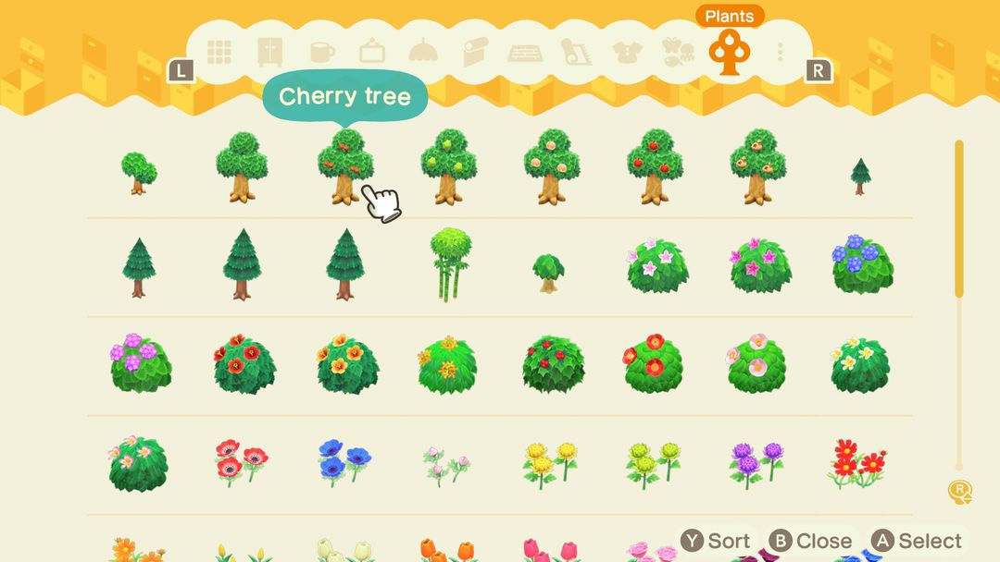
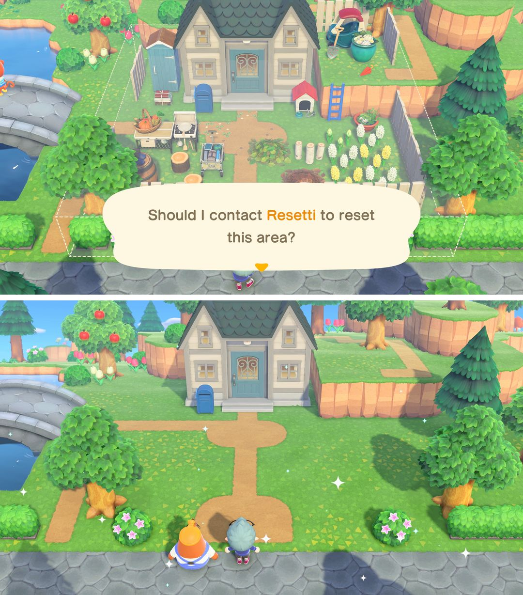
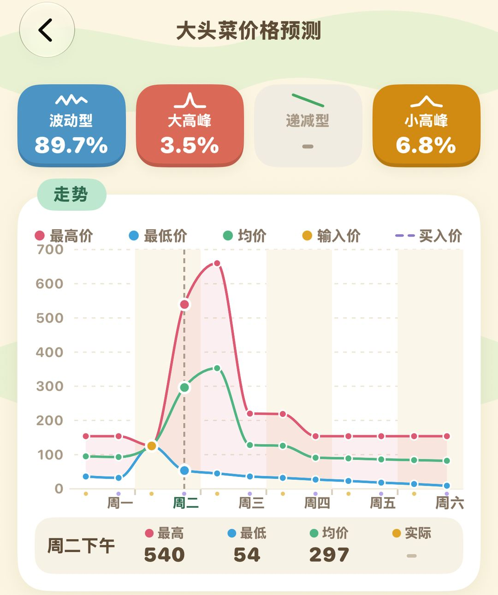

动森冷知识和省时小技巧（3.0 版）
25 条，老玩家也未必都知道
这里攒了 25 条零碎但好用的东西，分成四组。前两组是 3.0 新加的方便功能，更新公告里大多一笔带过，不少人更新完了也没注意到；后两组是一直好用的老技巧，赚钱、敲石头、钓鱼抓虫都用得上。
标「3.0」的，要先把游戏更新到 3.0 及以上（免费更新，Switch 和 Switch 2 都能装）；标「Switch 2」的，只有 Switch 2 版能用。
01收纳和 DIY（3.0）
3.0 最实在的改动是收纳最多能扩到 9000 格。收纳扩到满级以后，再去服务处找狸克，还能再扩两次：扩到 7000 格要 150 万铃钱，扩到 9000 格要 180 万。家具、材料攒得多的话，这笔钱花得很值。
而且收纳里现在花、树、灌木都能放。以前改岛得把花和树一株株挖起来，再找块空地临时种着；现在直接收进收纳，改完地形再拿出来接着种，省去来回倒腾。

3.0 的收纳多了「植物」一栏，长大的树、灌木和花都放得进去（英文版画面）（图：任天堂 3.0 宣传图，经 Nookipedia）
DIY 也顺手了不少。一次最多能连做 10 个，做栅栏、鱼饲料这种要大量重复的东西，选好数量一次做完，不用对着工作台一下一下地按。
收纳里的材料直接能用：DIY 和改造家具时，会自动从收纳里取材料和改造工具组，不用先一样样搬到口袋里。改造工具组在商店一次能买 50 个，也不用一个个点着买了。
另外，服务处的回收箱里有时会躺着一份DIY手册。平时路过服务处，进门顺手翻一下回收箱，说不定能白捡一份。

服务处：左边柜台找狸克扩收纳，左下角黄色的就是回收箱
02岛上生活（3.0 和 Switch 2）
改岛时最好用的是L 键对齐格子。按一下 L，角色会站到所在格子的正中间；按住 L 走路，就只会沿着一个方向走。铺路、立栅栏、挖河的时候这样走，线条笔直，不会歪出半格。
岛上杂草长疯了，可以找然然。3.0 起园艺店的除草服务降到 6 万铃钱，岛上杂草有 30 棵以上就能请他来，一次清干净。
想大改布局的话，电源叔叔能帮你清场：整座岛、整片沙滩，或者你圈出来的一块区域，上面的家具、花和地面设计都能一次清走。第一次请他免费，之后每天 6 万铃钱，付过钱当天随便用几次都行，适合集中一天把岛推倒重来。

上：圈好区域请电源叔叔来清场；下：清完的样子（英文版画面）（图：任天堂 3.0 宣传图，经 Nookipedia）
潜水时捞到虾夷扇贝，要是正好碰上阿獭冒出来，就把扇贝给他。3.0 起这样换一定能拿到珍珠，不用再碰运气。
雪花和另外几样东西，3.0 以后也能丢进回收箱卖。商店关门以后，把它们丢进门口的回收箱就行，不用等第二天开门。
Switch 2 版还多了手持扩音器的用法：对着 Switch 2 的麦克风喊岛民的名字，就能找到他在哪。岛上找人找半天的时候，喊一嗓子比满岛乱转快。
03赚钱和材料
敲石头之前，先在自己身后挖坑。一边敲一边会被石头弹得往后退，退开了就接不上下一下。把身后和两侧挡住，连敲不会被弹开，能拿满 8 个材料。
石头敲出的金矿石一天最多一块，出过了就别指望同一天还有。另外岛上有一块石头，每天敲下去出的是铃钱，记一下是哪块。
发光点里埋钱，埋 1 万铃钱就够，长出的发财树稳拿 3 万。埋得更多是在赌运气，多数时候结出来的也只有 3 万，等于把本钱压了进去。
摇树也有讲究。每天最多两棵树会掉家具，摇到两件就可以收手。摇树还可能掉下蜂巢，摇之前先把捕虫网拿在手上，黄蜂一飞出来就转身挥网。
卖东西前看一眼当天的热门商品。卖热门商品，商店给双倍价钱；丢回收箱虽然省事，但只给八成，也没有热门加成，大件好东西还是等开门再卖。
外地水果更值钱。朋友岛上带回来的、或者家人寄来的水果，种成果树以后卖价是本地水果的好几倍，岛上有空地的话多种几棵。
抓到稀有的鱼和虫，先存着留给俞司廷、龙克斯。他们来岛上的时候（比赛当天也算）会按商店价的 1.5 倍收，比直接卖给商店多赚一半。
炒大头菜要卡时间。曹卖只在周日上午出现，大头菜要在下周日早上之前卖掉，不然会烂；往回调时间也会让它直接坏掉。所以周日中午前去她那儿买好，接下来一周盯着商店的收购价，挑个高价出手。

动森圈圈的菜价预测：填上买入价和每天的收购价，估当周大概怎么走
04钓鱼、抓虫和体力
沙滩上冒水的小孔，底下埋着蛤蜊。挖出来能做鱼饲料，撒进水里，鱼影很快就游过来。钓鱼大赛之前多做一些备着，能省下不少等鱼的时间。
三只同样的鱼或虫，能换一个模型。鱼交给俞司廷，虫交给龙克斯，第二天他们会把做好的模型寄过来，拿来装饰房间正好。
晚上撞见狼蛛、蝎子，先挖坑把自己围起来。它们扑不过来，你就能慢慢等它停下，再挥网一下兜住。
吃水果能攒力气。吃一个能挖起一棵树或敲碎一块石头，最多能连吃 10 个攒着慢慢用。要挪大树的话，先吃饱再动手。
椰子树也能种到草地边上。它只长在沙子上，用岛屿创作家在草地上铺一块沙子路，就能种下去，海边以外也能有一排椰子树。
动森圈圈 · 小程序和 iOS App 都搜「动森圈圈」